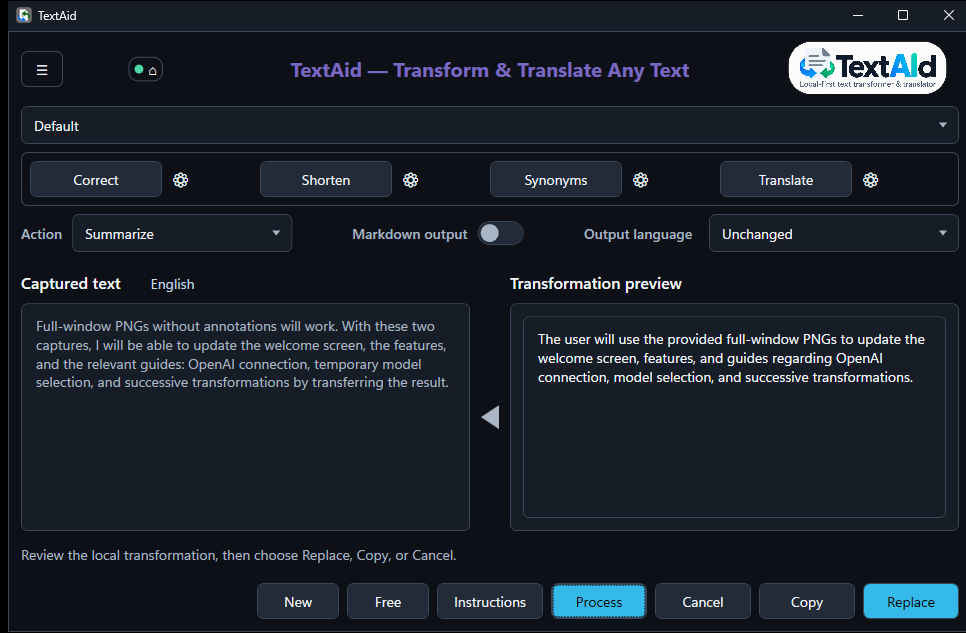
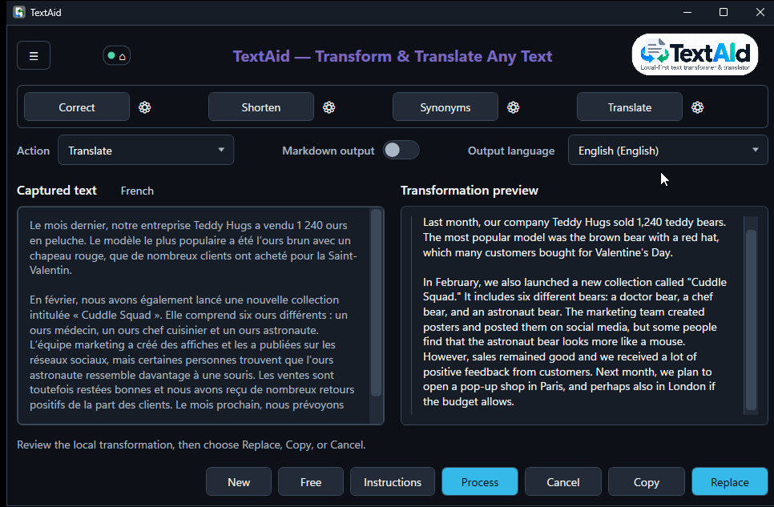

Choose
Pick an action
Press Ctrl+C, then C to open TextAid with a selection or an empty input area. Correct, rewrite, summarize, or choose another action.
TextAid helps you correct, reshape, generate, and translate text from the Windows applications you already use. Capture a selection or enter text directly, choose what you need, and review the result before using it.

TextAid's source code is public on GitHub. Compiled Windows releases are available separately, so you can use the application without building it yourself.
Free for non-commercial use. Commercial use requires prior written permission. Read the full license.
TextAid works with the text you select and gives you a chance to check every result.
Press Ctrl+C, then C to open TextAid with a selection or an empty input area. Correct, rewrite, summarize, or choose another action.
Press Ctrl+C, then T to start a translation immediately. Review it and adjust the destination language when needed.
Inspect the result, then copy it, replace the original selection when available, or cancel.
Use the filled left-pointing triangle to move a completed result into the input. Then choose another action and run it when you are ready. The result’s known language follows the text.
Work on the intermediate text without copying and pasting it between windows.
Leave the selector on Default for normal routing, or explicitly choose a configured connection and model for the next action.
TextAid starts with local Ollama. You can also configure a network Ollama server, sign in with OpenAI to use an eligible ChatGPT plan, or keep using an OpenAI-compatible service with its API key.
Each connection has its own Active setting and model. Both OpenAI access methods run in the External category and require deliberate setup.
How connections and profiles workRun a model through Ollama on your Windows computer.
Connect to an Ollama server on a network you administer.
Sign in with OpenAI and authorize ChatGPT plan usage, or configure an OpenAI-compatible endpoint and API key. Plan and account limits apply.

Start with a useful action. Explore presets and custom actions next. The detailed connection, shortcut, and interface-language settings are there when you need them.
Open the User Guide →